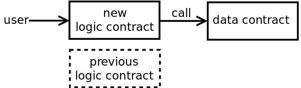
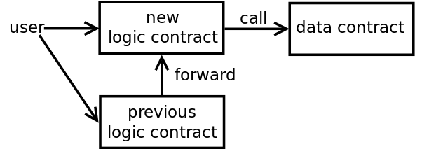
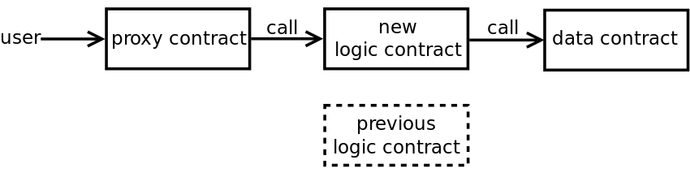
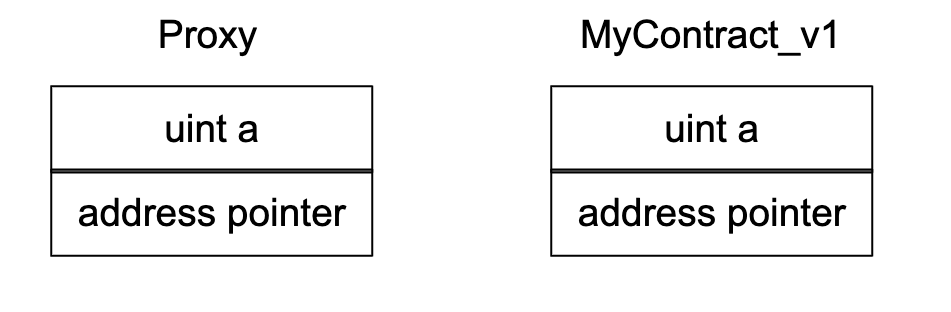
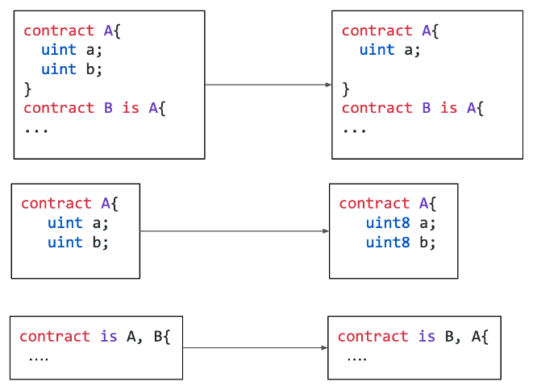

Data Separation
```js
contract Logic {
Data data;
function inc() public{
data.setV(data.v() + 1);
}
function v() public
returns(uint){
return data.v();
}
}
```
```js
contract Data is Owner {
uint public v;
function setV(uint new_v)
onlyOwner
public {
v = new_v;
}
}
```
Data storage strategy: key value pair
```js
contract DataContract is Owner {
mapping(bytes32 => uint) uIntStorage;
function getUint(bytes32 key) view public returns(uint) {
return uintStorage[key];
}
function setUint(bytes32 key, uint new_val) onlyOwner public {
uintStorage[key] = new_val;
}
}
```
It is also known as Eternal storage
Data separation: Recommendations
- Define clear separation between data and logic
- Keep simple implementation
- Avoid complex data storage (ex: key-value pair)
- Define the upgrade procedure
- How to upgrade the contracts? Pause contracts
- How to store keys
- How to communicate with users
How to Upgrade (Solution : 1)
Upgrade: deploy new logic contract and disable old one

How to Upgrade (Solution: 2)
Upgrade: deploy new logic contract and forward call

Data Separation: alternative
Use of third proxy contract
- Provide constant entry point for users

EVM Internals
- EVM has a hardvard architecture
- Program memory != Data memory
- A contract can
- A contract cannot
- Write directly to another contract's data
### `delegatecall` instruction
* **Delegatecall instruction:**
* Execute code from external contracts from the caller's data context
* **Example:**
* contract A *delegatecalls* to contract B
* The code of contract B will be executed using data fo contract A
* **Designed for libraries**
### Library
```js
library Lib {
struct Data { uint val; }
function set(Data storage self, uint new_val) public {
self.val = new_val;
}
}
contract C {
Lib.Data public myVal;
function set(uint new_val) public {
Lib.set(myVal, new_val);
}
}
```
### Upgradeability through delegatecall
* **Two contracts:**
* Proxy contracts: holds data: (immutable)
* Logic: holds the logic (mutable)
* Fallback function of proxy delegatecalls to Logic

### Upgradeability through delegatecall
- **Upgrade: change the logic contract**
- **Each version of the logic contract must follow the same memory layout**
* Do you know precisely how Solidity store variables in memory?
* Refer content of Week 8
Delegatecall Example
```js
contract Proxy{
uint public a;
address public pointer;
...
function () public {
pointer.delegatecall(..)
}
}
```
```js
contract MyContract_V1 {
uint public a;
address public pointer;
function set(uint val) public {
a = val;
}
}
```

Delegatecall Example
```js
contract Proxy{
uint public a;
address public pointer;
...
function () public {
pointer.delegatecall(..)
}
}
```
```js
contract MyContract_V1 {
uint public a;
address public pointer;
function set(uint val) public {
a = val;
}
}
```

```js
contract MyContract_V2 {
uint public pointer;
address public a;
function set(uint val) public {
a = val;
}
}
```
Delegatecall Example
```js
contract Proxy{
uint public a;
address public pointer;
...
function () public {
pointer.delegatecall(..)
}
}
```
```js
contract MyContract_V1 {
uint public a;
address public pointer;
function set(uint val) public {
a = val;
}
}
```

```js
contract MyContract_V2 {
uint public pointer;
address public a;
function set(uint val) public {
a = val;
}
}
```
Examples of incorrect upgrades

### Delegatecall Proxy: Recommendations
- **Never remove a variable**
- **Never change a variable type**
- Packing issue
- **Be careful with the inheritance**
- Inheritance order impacts the memory layout
- Avoid storage collisions
* Two variables taking same storage slot
### Delegatecall Proxy: Recommendations
- **Use same compiler version**
- Solidity could have better optimizations
- **Be careful with correct contract initializatione**
- Constructors cannot be used
- **Inspect the generated EVM code manually**
- No mature tool can validate the memory layout
### Delegatecall Proxy: Recommendations
- **Define the upgrade procedure**
- How to upgrade the contracts?
- How to store keys?
- how to communicate with users?
### Upgradeability: Takeaways
- **Allow to patch the contracts**
- **Drawbacks for developers:**
- Increase code size and complexity
- Require extra knowledge
- Increase number of keys
- Encourage solving problems after deployments
- **Drawbacks for users:**
- Increase gas cost
- Prevent trustless system
### Upgradeability: recommendations
- **Be careful when choosing features of your contract**
- **Strive for the simplest solution**
- Use data separation over delegatecall
- **Don't add Upgradeability at the end of our development process**
Alternative?
Contract Migration
### Contract Migration
- Copy variables from the contract to a new version
### Why do you need a Migration?
- **To upgrade non-upgradable contracts**
- **To recover from a compromise**
- Contract compromise
- Key(s) compromise
- **To recover from incorrect setup**
- owner = 0
### How to perform a migration
1. **Data recovery: Collect the values of the variables**
- Use Events
2. **Data writing: Deploy and initiate the new contract**
- Use an initialization state
- Migration 300.000 balances = $7,500 in October'20
### Migration versus Upgradeability
- **Migration covers most of the benefits of Upgradeability**
- **Arguments for migration:**
- Simple than Upgradeability
- No additional code
- No additional key
- No additional trust from the user
- No additional cost for users
Upgradable contracts also need a migration procedure
### Migration versus Upgradeability
- **Arguments for Upgradeability**
- **Frequent update (cost of migration)**
- One migration is cheap (read this [blog](https://blog.trailofbits.com/2018/10/29/how-contract-migration-works/))
- Fixed address required